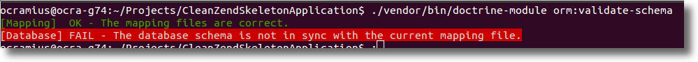
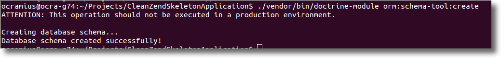

Marco Pivetta
Marco Pivetta
Ocramius
octrine team
 contributor
contributor

 Ocramius
Ocramius
Current projects
ProxyManager, BjyAuthorize, AssetManager, ZeffMu, ZfrRest, OcraDiCompiler, OcraServiceManager, OcraCachedViewResolver, DoctrineModule, DoctrineORMModule, DoctrineMongoODMModule, VersionEyeModule
WHY?
Doctrine 2 & ZF2
+
What is Doctrine ORM?
Doctrine ORM is an Object Relational Mapper
It is inspired by Hibernate and the JPA (JSR-317)
It is based on a DBAL (DataBase Abstraction Layer)
Allows developers to save and load POPO with SQL
An ORM gives you the impression that you are working with a "virtual" graph composed by objects...
... backed by any persistence layer!
Simpler:
Forget the database!
Doctrine works with simple objects (POPO)
Objects with an identifier are defined as Entities
namespace Application\Entity;
use Doctrine\ORM\Mapping as ORM;
/** @ORM\Entity */
class User {
/**
* @ORM\Id
* @ORM\GeneratedValue(strategy="AUTO")
* @ORM\Column(type="integer")
*/
protected $id;
/** @ORM\Column(type="string") */
protected $name;
// getters/setters
}Everything OK so far?
php public/index.php orm:validate-schema
Generate the database
php public/index.php orm:schema-tool:create
$objectManager = \Doctrine\ORM\EntityManager::create(/* yadda */);$objectManager = \Doctrine\ORM\EntityManager::create(/* yadda */);
$user = new \Application\Entity\User();
$user->setName('Zaphod Beeblebrox');
$objectManager->persist($user);
$objectManager->flush();
var_dump($user->getId());ಠ_ಠ
Persisting an object
$user = new \Application\Entity\User();
$user->setName('Arthur Dent');
$objectManager->persist($user); // $user is now "managed"
$objectManager->flush(); // commit changes to db
var_dump($user->getId()); // 1Loading an object
$ford = $objectManager
->getRepository('Application\Entity\User')
->findOneBy(array('name' => 'Ford Prefect'));Updating an object
$marvin = $objectManager
->getRepository('Application\Entity\User')
->findOneBy(array('name' => 'Marvin'));
$marvin->setName('Marvin the Paranoid Android');
$objectManager->flush();Deleting an object
$president = $objectManager
->getRepository('Application\Entity\User')
->findOneBy(array('name' => 'Zaphod Beeblebrox'));
$objectManager->remove($president);
$objectManager->flush();Associations
namespace Application\Entity;
use Doctrine\ORM\Mapping as ORM;
/** @ORM\Entity */
class Address {
/**
* @ORM\Id
* @ORM\GeneratedValue(strategy="AUTO")
* @ORM\Column(type="integer")
*/
protected $id;
/** @ORM\Column(type="string") */
protected $country;
// getters/setters
}class User {
// ...
/** @ORM\ManyToOne(targetEntity="Address") */
protected $address;
// ...
}$user = new User();
$user->setName('Arthur Dent');
$objectManager->persist($user);
$address = new Address();
$address->setCountry('UK');
$objectManager->persist($address);
$user->setAddress($address);
$objectManager->flush();$user = $objectManager
->getRepository('Application\Entity\User')
->findOneBy(array('name' => 'Arthur Dent'));
echo $user->getAddress()->getCountry(); // UKclass User {
// ...
/** @ORM\ManyToMany(targetEntity="User") */
protected $friends;
public function __construct() {
$this->friends = new \Doctrine\Common\Collections\ArrayCollection();
}
// ...
}$arthur = new User();
$arthur->setName('Arthur Dent');
$objectManager->persist($arthur);
$trillian = new User();
$trillian->setName('Tricia Marie McMillan');
$objectManager->persist($trillian);
$zaphod = new User();
$zaphod->setName('Zaphod Beeblebrox');
$objectManager->persist($zaphod);
$arthur->getFriends()->add($trillian);
$trillian->getFriends()->add($zaphod);
$objectManager->flush();$arthur = $objectManager
->getRepository('Application\Entity\User')
->findOneBy(array('name' => 'Arthur Dent'));
foreach ($arthur->getFriends() as $friend) {
echo $friend->getName() . "\n";
}Note: Trillian doesn't see Arthur as a friend
Note2: Zaphod doesn't see Trillian as a friend